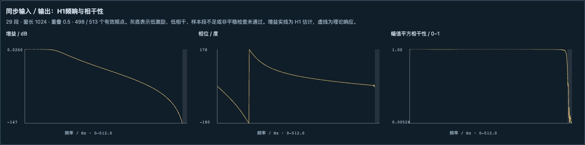

27 simulations · Known Butterworth response
Welch H1 and valid frequency bands
The original dual-channel virtual oscilloscope displays and measures a pair of signals. The Python workbench estimates the filter response from paired inputs and outputs. This example uses numerically simulated signals. Download the original LabVIEW VI

Bins are screened for weak input excitation or coherence below 0.8. Fewer than four Welch segments or a failed stationarity check masks the full estimate.
Compare the noise settings
Compare output noise levels with window length and overlap held at 1,024 samples and 50%. Errors are computed only over valid bins between 10 and 180 Hz.
Valid frequency bins · 169
| Gain MAE | Phase MAE |
|---|---|
| 0.0116 dB | 0.0843° |
Valid frequency bins · 151
| Gain MAE | Phase MAE |
|---|---|
| 0.2016 dB | 0.9786° |
Valid frequency bins · 35
| Gain MAE | Phase MAE |
|---|---|
| 0.3663 dB | 2.9764° |
Sampling example
A 750 Hz sine sampled at 1,024 Hz exceeds the 512 Hz Nyquist limit. Its observed peak folds to 274 Hz. The local workbench runs this preset and marks the folded frequency. The H1 results above come from simulation.